Last updated 2026-10-15 22:01:58 (server time). Regenerated after every queue event.
| # | run | status | attempts | started | finished |
|---|---|---|---|---|---|
| 1 | v3_pilot: Items 1+2 pilot renders (far-glued C3, floating shadowless C4) for visual approval | done | 1 | 2026-10-15 19:49:59 | 2026-10-15 20:00:30 |
| 2 | t4_causal_v2: Item 4: five heads together, amplification, path patching into scene-flow decoder (v2) | done | 1 | 2026-10-15 20:00:44 | 2026-10-15 20:18:45 |
| 3 | t5_subspace_v2: Item 5: LEACE erasure and steering along the motion subspace, layers 17-21 (v2) | done | 1 | 2026-10-15 20:19:23 | 2026-10-15 20:36:24 |
| 4 | t3_viewsweep_v2: Item 3: 2, 3, 4, 7 input views, outputs + probes + attention (v2) | done | 1 | 2026-10-15 20:36:30 | 2026-10-15 21:01:31 |
| 5 | v3_scale: (split into v3_scale_float and v3_scale_far) | waiting for approval (gate retired) |
0 | ||
| 6 | v3_pipeline: (split into v3_pipeline_float and v3_pipeline_far) | queued | 0 | ||
| 7 | v3_viewsweep: Items 2+3: view-count sweep on the floating set | queued | 0 | ||
| 8 | v3_pilot_far2: Item 1 pilot re-render: far-glued pairs kept far apart in the image | done | 1 | 2026-10-15 21:35:58 | 2026-10-15 21:40:05 |
| 9 | t8_realdata_kitti: Item 8a: KITTI scene flow 2015 (200 scenes), Any4D slope / EPE / sep_ratio, 2, 4, 7 views, square and wide input | done | 1 | 2026-10-15 21:40:18 | 2026-10-15 22:01:41 |
| 10 | t8_realdata_sintel: Item 8b: MPI Sintel training (final, clean; every 4th frame), Any4D slope / EPE / sep_ratio, 2 and 4 views, square and wide input | RUNNING | 1 | 2026-10-15 22:01:54 | |
| 11 | v3_scale_float: Item 2: render 70 floating shadowless scenes + 20 extra grounded epi (v2) | queued | 0 | ||
| 12 | v3_pipeline_float: Item 2: Steps 3-6 + adjacency control on the floating set and v2 with 30 epi | queued | 0 | ||
| 13 | v3_scale_far: Item 1: render 20 far-glued scenes (image-gap constraint) | queued | 0 | ||
| 14 | v3_pipeline_far: Item 1: Steps 3-6 + adjacency control on the far-glued set | queued | 0 |
Supervisor heartbeat: 2026-10-15 22:01:11 running t8_realdata_kitti
Items 1+2 pilot renders (far-glued C3, floating shadowless C4) for visual approval
Status: done, attempt 1, started 2026-10-15 19:49:59, finished 2026-10-15 20:00:30. Raw results, log.
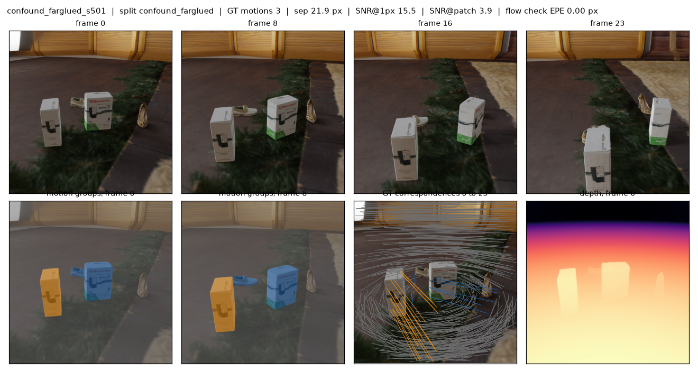
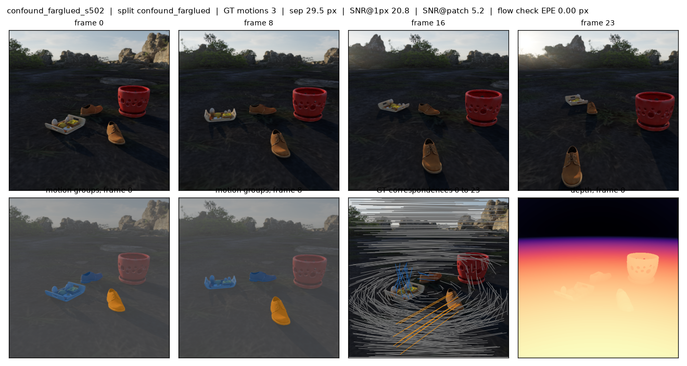
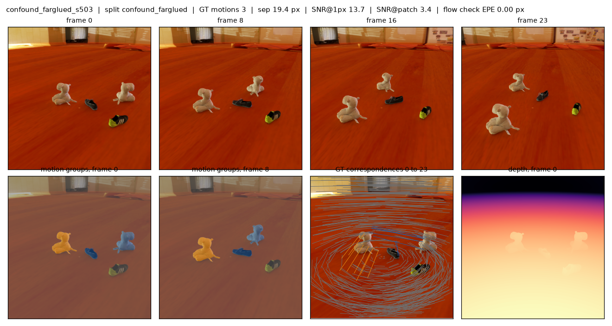
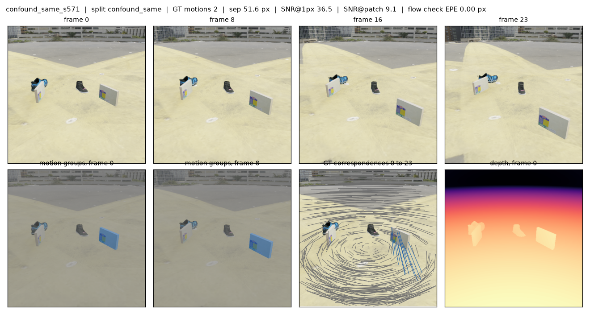
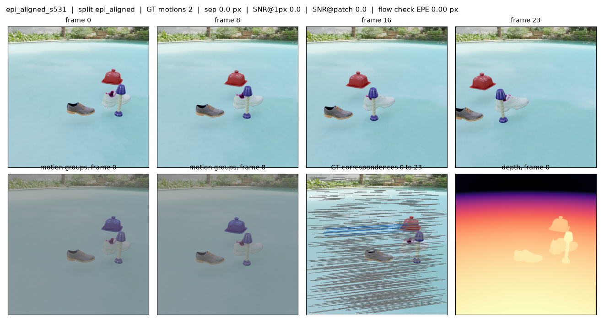
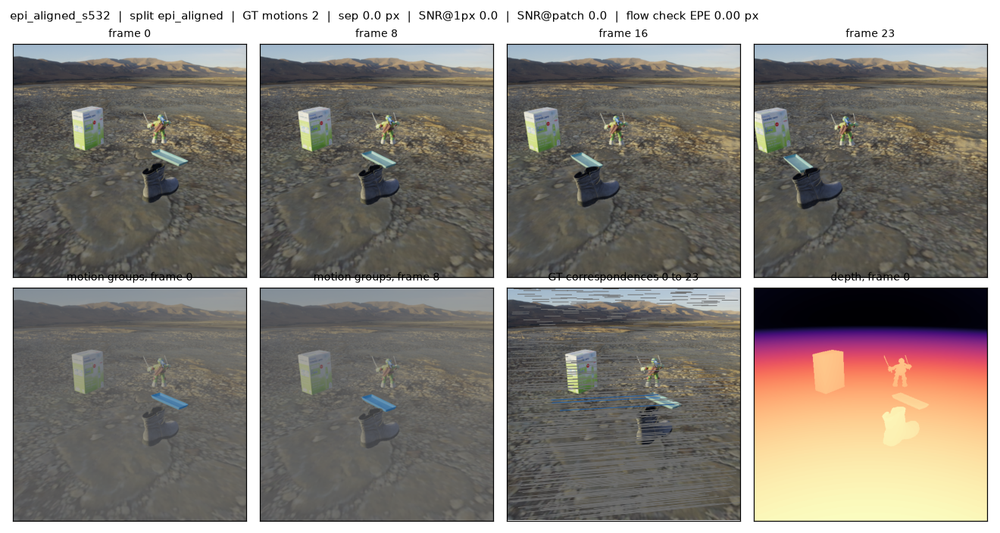
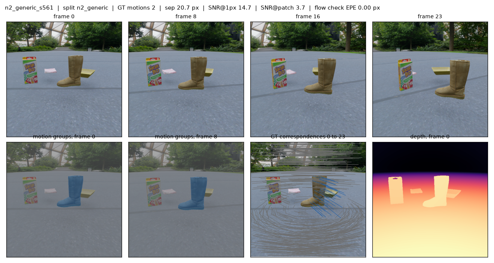
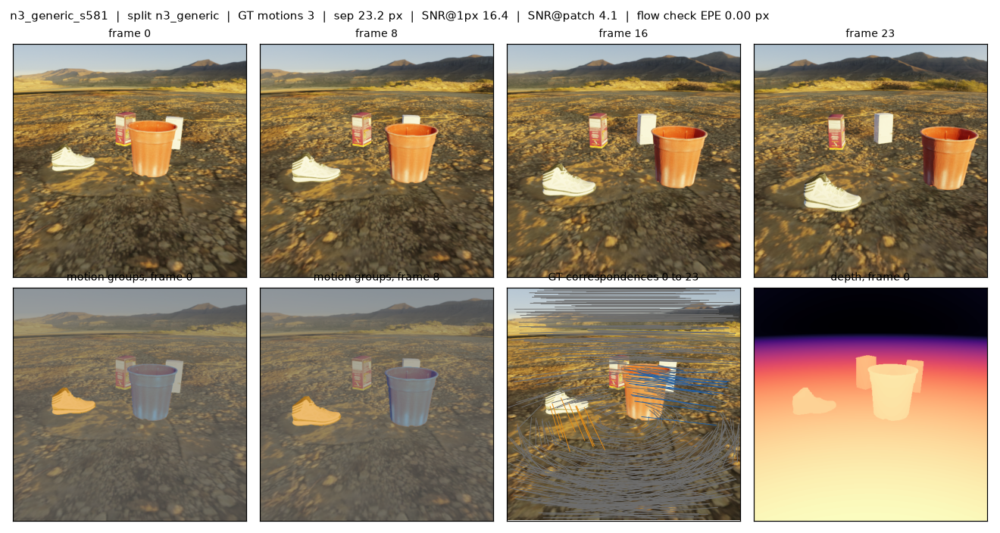
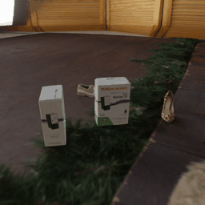
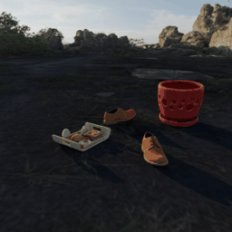
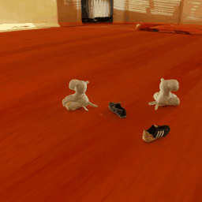
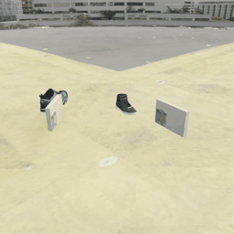
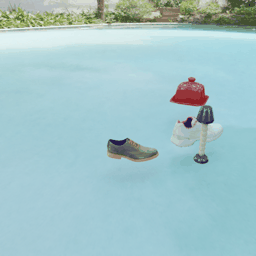
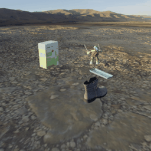
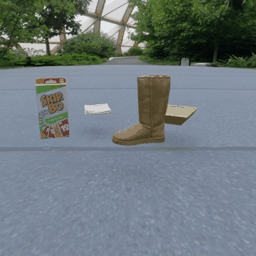
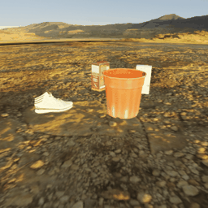
Item 4: five heads together, amplification, path patching into scene-flow decoder (v2)
Status: done, attempt 1, started 2026-10-15 20:00:44, finished 2026-10-15 20:18:45. Raw results, log.
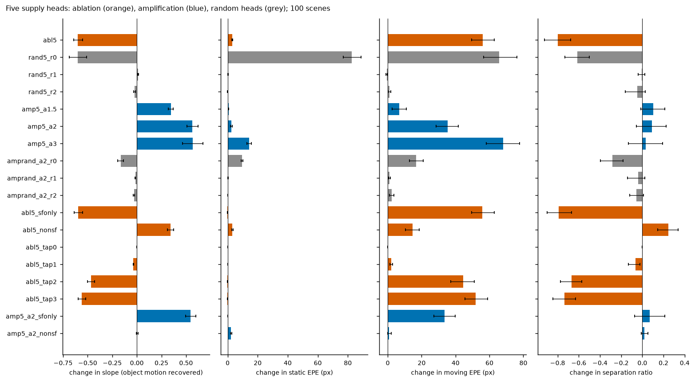
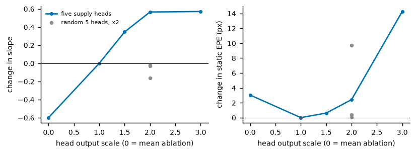
| condition | n | change in slope [95% CI] | change in epe_static [95% CI] | change in epe_moving [95% CI] | change in sep_ratio [95% CI] |
|---|---|---|---|---|---|
| abl5 | 98 | -0.599 [-0.641, -0.552] | +3.028 [+2.652, +3.418] | +56.046 [+49.429, +62.922] | -0.796 [-0.925, -0.677] |
| rand5_r0 | 98 | -0.603 [-0.688, -0.512] | +82.527 [+77.073, +88.878] | +65.643 [+56.554, +76.205] | -0.614 [-0.729, -0.502] |
| rand5_r1 | 98 | +0.013 [+0.008, +0.017] | +0.190 [+0.020, +0.356] | -0.646 [-1.056, -0.281] | -0.007 [-0.039, +0.022] |
| rand5_r2 | 98 | -0.021 [-0.032, -0.012] | +0.026 [-0.027, +0.080] | +1.060 [+0.273, +1.853] | -0.048 [-0.160, +0.026] |
| amp5_a1.5 | 98 | +0.346 [+0.318, +0.372] | +0.609 [+0.397, +0.836] | +6.702 [+2.648, +10.877] | +0.102 [-0.012, +0.212] |
| amp5_a2 | 98 | +0.565 [+0.509, +0.623] | +2.413 [+1.900, +2.987] | +35.210 [+28.445, +41.645] | +0.090 [-0.055, +0.227] |
| amp5_a3 | 98 | +0.570 [+0.463, +0.670] | +14.253 [+12.911, +15.775] | +68.018 [+58.151, +77.788] | +0.034 [-0.130, +0.193] |
| amprand_a2_r0 | 98 | -0.165 [-0.194, -0.134] | +9.694 [+9.131, +10.274] | +16.741 [+12.908, +21.048] | -0.281 [-0.397, -0.184] |
| amprand_a2_r1 | 98 | -0.016 [-0.020, -0.012] | +0.351 [+0.231, +0.482] | +0.981 [+0.571, +1.431] | -0.039 [-0.139, +0.025] |
| amprand_a2_r2 | 98 | -0.029 [-0.037, -0.022] | +0.037 [-0.005, +0.085] | +2.196 [+1.086, +3.594] | -0.055 [-0.120, +0.010] |
| abl5_sfonly | 98 | -0.597 [-0.637, -0.552] | -0.033 [-0.044, -0.022] | +55.862 [+49.374, +62.780] | -0.789 [-0.900, -0.669] |
| abl5_nonsf | 98 | +0.342 [+0.310, +0.374] | +3.142 [+2.732, +3.543] | +14.683 [+10.405, +18.671] | +0.245 [+0.145, +0.337] |
| abl5_tap0 | 98 | +0.000 [+0.000, +0.000] | +0.000 [+0.000, +0.000] | +0.000 [+0.000, +0.000] | +0.000 [+0.000, +0.000] |
| abl5_tap1 | 98 | -0.034 [-0.038, -0.031] | +0.010 [+0.005, +0.016] | +2.047 [+1.357, +2.957] | -0.066 [-0.133, -0.023] |
| abl5_tap2 | 98 | -0.464 [-0.502, -0.428] | -0.029 [-0.040, -0.018] | +44.376 [+37.258, +50.982] | -0.670 [-0.773, -0.571] |
| abl5_tap3 | 98 | -0.558 [-0.596, -0.520] | -0.024 [-0.036, -0.012] | +51.867 [+45.666, +58.910] | -0.736 [-0.844, -0.629] |
| amp5_a2_sfonly | 98 | +0.546 [+0.496, +0.601] | +0.187 [+0.138, +0.241] | +33.533 [+27.208, +39.827] | +0.068 [-0.072, +0.212] |
| amp5_a2_nonsf | 98 | +0.005 [-0.005, +0.015] | +2.341 [+1.829, +2.883] | +0.858 [-0.065, +2.004] | +0.021 [-0.012, +0.052] |
causal_v2_summary.md
| condition | n | d slope [95% CI] (p) | d epe_static [95% CI] (p) | d epe_moving [95% CI] (p) | d sep_ratio [95% CI] (p) |
|---|---|---|---|---|---|
| base | 100 | 0.607 | 4.100 | 34.957 | 0.825 |
| abl5 | 100 | -0.599 [-0.641, -0.552] (p=9.9e-25) | +3.028 [+2.644, +3.418] (p=6.4e-24) | +56.046 [+49.487, +63.222] (p=2.4e-23) | -0.796 [-0.917, -0.685] (p=3.2e-27) |
| rand5_r0 | 100 | -0.603 [-0.691, -0.509] (p=4.5e-22) | +82.527 [+76.484, +88.337] (p=1.6e-30) | +65.643 [+56.134, +75.703] (p=9.9e-25) | -0.614 [-0.748, -0.494] (p=2e-18) |
| rand5_r1 | 100 | +0.013 [+0.008, +0.017] (p=0.0032) | +0.190 [+0.018, +0.356] (p=0.035) | -0.646 [-1.033, -0.242] (p=0.02) | -0.007 [-0.039, +0.022] (p=0.83) |
| rand5_r2 | 100 | -0.021 [-0.030, -0.012] (p=0.0016) | +0.026 [-0.025, +0.078] (p=0.13) | +1.060 [+0.307, +1.815] (p=0.02) | -0.048 [-0.143, +0.026] (p=1) |
| amp5_a1.5 | 100 | +0.346 [+0.320, +0.371] (p=9.9e-25) | +0.609 [+0.409, +0.842] (p=0.00041) | +6.702 [+2.721, +10.861] (p=0.00077) | +0.102 [-0.011, +0.215] (p=0.033) |
| amp5_a2 | 100 | +0.565 [+0.510, +0.621] (p=2.4e-23) | +2.413 [+1.884, +3.011] (p=1.3e-11) | +35.210 [+28.731, +41.926] (p=5.9e-15) | +0.090 [-0.058, +0.227] (p=0.53) |
| amp5_a3 | 100 | +0.570 [+0.463, +0.683] (p=1.1e-17) | +14.253 [+12.887, +15.741] (p=1.6e-30) | +68.018 [+57.848, +77.329] (p=7.1e-21) | +0.034 [-0.126, +0.188] (p=0.83) |
| amprand_a2_r0 | 100 | -0.165 [-0.194, -0.136] (p=2.5e-13) | +9.694 [+9.141, +10.280] (p=1.6e-30) | +16.741 [+13.008, +20.851] (p=2.5e-13) | -0.281 [-0.399, -0.183] (p=3.2e-09) |
| amprand_a2_r1 | 100 | -0.016 [-0.020, -0.012] (p=3.6e-11) | +0.351 [+0.227, +0.482] (p=1.3e-05) | +0.981 [+0.574, +1.407] (p=2.6e-05) | -0.039 [-0.140, +0.027] (p=0.14) |
| amprand_a2_r2 | 100 | -0.029 [-0.037, -0.021] (p=3.6e-11) | +0.037 [-0.011, +0.086] (p=0.0066) | +2.196 [+1.129, +3.689] (p=6.6e-05) | -0.055 [-0.119, +0.008] (p=0.019) |
| abl5_sfonly | 100 | -0.597 [-0.639, -0.552] (p=6.3e-30) | -0.033 [-0.045, -0.021] (p=1.3e-11) | +55.862 [+49.332, +63.123] (p=6.2e-28) | -0.789 [-0.908, -0.681] (p=3.2e-27) |
| abl5_nonsf | 100 | +0.342 [+0.307, +0.375] (p=6.3e-30) | +3.142 [+2.751, +3.549] (p=6.4e-24) | +14.683 [+10.535, +18.844] (p=3.7e-06) | +0.245 [+0.149, +0.336] (p=1.3e-08) |
| amp5_a2_sfonly | 100 | +0.546 [+0.492, +0.597] (p=3.1e-26) | +0.187 [+0.136, +0.241] (p=2e-21) | +33.533 [+27.535, +40.204] (p=4e-14) | +0.068 [-0.071, +0.212] (p=0.83) |
| amp5_a2_nonsf | 100 | +0.005 [-0.005, +0.015] (p=0.085) | +2.341 [+1.807, +2.946] (p=1.1e-09) | +0.858 [-0.108, +2.018] (p=0.054) | +0.021 [-0.011, +0.054] (p=0.056) |
| abl5_tap0 | 100 | +0.000 [+0.000, +0.000] (p=nan) | +0.000 [+0.000, +0.000] (p=nan) | +0.000 [+0.000, +0.000] (p=nan) | +0.000 [+0.000, +0.000] (p=nan) |
| abl5_tap1 | 100 | -0.034 [-0.039, -0.031] (p=9.9e-25) | +0.010 [+0.005, +0.016] (p=1.6e-08) | +2.047 [+1.326, +2.879] (p=4.2e-07) | -0.066 [-0.133, -0.021] (p=6e-07) |
| abl5_tap2 | 100 | -0.464 [-0.502, -0.427] (p=6.2e-28) | -0.029 [-0.041, -0.018] (p=1.1e-09) | +44.376 [+38.115, +51.386] (p=6.2e-28) | -0.670 [-0.778, -0.565] (p=3.8e-22) |
| abl5_tap3 | 100 | -0.558 [-0.597, -0.519] (p=6.3e-30) | -0.024 [-0.037, -0.012] (p=1.6e-08) | +51.867 [+45.332, +58.405] (p=6.2e-28) | -0.736 [-0.847, -0.628] (p=2.9e-25) |
Item 5: LEACE erasure and steering along the motion subspace, layers 17-21 (v2)
Status: done, attempt 1, started 2026-10-15 20:19:23, finished 2026-10-15 20:36:24. Raw results, log.
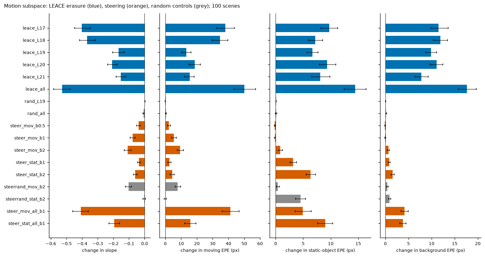
| condition | n | change in slope [95% CI] | change in epe_moving [95% CI] | change in epe_static_obj [95% CI] | change in epe_bg [95% CI] |
|---|---|---|---|---|---|
| leace_L17 | 98 | -0.402 [-0.447, -0.348] | +38.038 [+32.434, +43.697] | +9.730 [+8.226, +11.254] | +11.513 [+9.845, +13.571] |
| leace_L18 | 98 | -0.368 [-0.417, -0.317] | +34.570 [+29.524, +39.565] | +7.174 [+5.963, +8.542] | +11.906 [+10.423, +13.435] |
| leace_L19 | 98 | -0.166 [-0.204, -0.130] | +13.393 [+10.523, +16.318] | +6.676 [+5.698, +7.692] | +9.856 [+8.726, +11.113] |
| leace_L20 | 98 | -0.208 [-0.237, -0.177] | +18.545 [+15.091, +22.181] | +9.312 [+7.896, +10.942] | +11.067 [+9.719, +12.466] |
| leace_L21 | 98 | -0.152 [-0.182, -0.123] | +15.413 [+12.389, +18.300] | +8.094 [+6.548, +9.835] | +7.760 [+6.356, +9.285] |
| leace_all | 98 | -0.528 [-0.582, -0.476] | +49.998 [+43.372, +57.259] | +14.456 [+12.472, +16.420] | +17.634 [+15.746, +19.696] |
| rand_L19 | 98 | +0.002 [+0.002, +0.003] | -0.054 [-0.106, +0.005] | +0.079 [+0.043, +0.117] | +0.069 [+0.030, +0.107] |
| rand_all | 98 | -0.007 [-0.010, -0.005] | +0.373 [+0.160, +0.591] | +0.091 [-0.054, +0.221] | +0.169 [+0.067, +0.271] |
| steer_mov_b0.5 | 98 | -0.039 [-0.050, -0.029] | +2.284 [+1.457, +3.179] | -0.164 [-0.239, -0.090] | -0.102 [-0.149, -0.052] |
| steer_mov_b1 | 98 | -0.077 [-0.093, -0.061] | +5.371 [+3.989, +6.980] | -0.110 [-0.232, +0.006] | -0.041 [-0.133, +0.051] |
| steer_mov_b2 | 98 | -0.108 [-0.131, -0.086] | +9.446 [+7.487, +11.583] | +0.808 [+0.487, +1.253] | +0.677 [+0.450, +0.919] |
| steer_stat_b1 | 98 | -0.036 [-0.044, -0.028] | +2.573 [+1.680, +3.609] | +3.151 [+2.611, +3.756] | +0.801 [+0.606, +1.012] |
| steer_stat_b2 | 98 | -0.060 [-0.071, -0.048] | +4.325 [+3.000, +5.561] | +6.357 [+5.555, +7.219] | +1.557 [+1.233, +1.908] |
| steerrand_mov_b2 | 98 | -0.103 [-0.122, -0.084] | +7.788 [+6.122, +9.671] | +0.387 [+0.153, +0.638] | +0.432 [+0.285, +0.604] |
| steerrand_stat_b2 | 98 | -0.002 [-0.010, +0.005] | -0.031 [-0.809, +0.711] | +4.499 [+3.590, +5.410] | +0.914 [+0.683, +1.176] |
| steer_mov_all_b1 | 98 | -0.409 [-0.460, -0.360] | +41.084 [+36.002, +46.727] | +4.910 [+3.568, +6.472] | +4.125 [+3.376, +4.954] |
| steer_stat_all_b1 | 98 | -0.195 [-0.228, -0.160] | +15.861 [+12.403, +19.399] | +8.973 [+7.629, +10.363] | +3.818 [+3.154, +4.460] |
Eraser fits (training fold; linear R^2 of 'moving' before and after erasure):
| fit | before | after |
|---|---|---|
| fold0_L17 | 0.595 | 0.095 |
| fold0_L18 | 0.592 | 0.159 |
| fold0_L19 | 0.652 | 0.069 |
| fold0_L20 | 0.696 | 0.258 |
| fold0_L21 | 0.750 | 0.100 |
| fold1_L17 | 0.573 | 0.130 |
| fold1_L18 | 0.570 | 0.172 |
| fold1_L19 | 0.627 | 0.124 |
| fold1_L20 | 0.677 | 0.040 |
| fold1_L21 | 0.719 | 0.019 |
subspace_v2_summary.md
| condition | n | d slope [95% CI] (p) | d epe_moving [95% CI] (p) | d epe_static_obj [95% CI] (p) | d epe_bg [95% CI] (p) | d spurious_static_obj [95% CI] (p) |
|---|---|---|---|---|---|---|
| base | 100 | 0.607 | 34.957 | 4.138 | 4.125 | 4.138 |
| leace_L17 | 100 | -0.402 [-0.449, -0.351] (p=1.1e-18) | +38.038 [+32.118, +43.972] (p=9.4e-20) | +9.730 [+8.166, +11.271] (p=2.7e-20) | +11.513 [+9.673, +13.375] (p=1.6e-28) | +9.730 [+8.148, +11.251] (p=2.7e-20) |
| leace_L18 | 100 | -0.368 [-0.421, -0.313] (p=4e-14) | +34.570 [+29.498, +39.969] (p=4.5e-22) | +7.174 [+5.960, +8.460] (p=3.3e-18) | +11.906 [+10.402, +13.403] (p=1.6e-30) | +7.174 [+5.997, +8.453] (p=3.3e-18) |
| leace_L19 | 100 | -0.166 [-0.201, -0.130] (p=3.9e-08) | +13.393 [+10.685, +16.170] (p=7.4e-12) | +6.676 [+5.756, +7.681] (p=6.4e-24) | +9.856 [+8.698, +11.076] (p=1.6e-28) | +6.676 [+5.648, +7.671] (p=6.4e-24) |
| leace_L20 | 100 | -0.208 [-0.239, -0.179] (p=9.9e-17) | +18.545 [+15.150, +22.090] (p=9.9e-17) | +9.312 [+7.857, +10.820] (p=2.6e-25) | +11.067 [+9.713, +12.587] (p=1.6e-28) | +9.312 [+7.885, +10.824] (p=2.6e-25) |
| leace_L21 | 100 | -0.152 [-0.183, -0.123] (p=4e-14) | +15.413 [+12.457, +18.483] (p=1.1e-18) | +8.094 [+6.491, +9.684] (p=3.3e-18) | +7.760 [+6.313, +9.208] (p=2.6e-25) | +8.094 [+6.508, +9.836] (p=3.3e-18) |
| leace_all | 100 | -0.528 [-0.580, -0.473] (p=7.1e-21) | +49.998 [+43.168, +56.996] (p=4.5e-22) | +14.456 [+12.475, +16.624] (p=8e-27) | +17.634 [+15.719, +19.562] (p=1.6e-28) | +14.456 [+12.530, +16.387] (p=8e-27) |
| rand_L19 | 100 | +0.002 [+0.001, +0.003] (p=1.3e-06) | -0.054 [-0.111, +0.007] (p=0.61) | +0.079 [+0.043, +0.118] (p=0.0018) | +0.069 [+0.033, +0.106] (p=0.012) | +0.079 [+0.040, +0.116] (p=0.0018) |
| rand_all | 100 | -0.007 [-0.010, -0.005] (p=1e-05) | +0.373 [+0.155, +0.598] (p=0.011) | +0.091 [-0.037, +0.227] (p=0.089) | +0.169 [+0.073, +0.264] (p=0.035) | +0.091 [-0.039, +0.223] (p=0.089) |
| steer_mov_b0.5 | 100 | -0.039 [-0.050, -0.030] (p=2.9e-09) | +2.284 [+1.430, +3.120] (p=0.00016) | -0.164 [-0.244, -0.088] (p=0.0016) | -0.102 [-0.151, -0.049] (p=1e-05) | -0.164 [-0.242, -0.092] (p=0.0016) |
| steer_mov_b1 | 100 | -0.077 [-0.093, -0.062] (p=9.9e-17) | +5.371 [+3.927, +6.817] (p=2.9e-09) | -0.110 [-0.228, +0.015] (p=0.02) | -0.041 [-0.128, +0.050] (p=0.19) | -0.110 [-0.230, +0.010] (p=0.02) |
| steer_mov_b2 | 100 | -0.108 [-0.130, -0.084] (p=2.5e-13) | +9.446 [+7.365, +11.576] (p=4e-14) | +0.808 [+0.448, +1.191] (p=0.00077) | +0.677 [+0.458, +0.917] (p=6.6e-05) | +0.808 [+0.470, +1.229] (p=0.00077) |
| steer_stat_b1 | 100 | -0.036 [-0.045, -0.028] (p=8.1e-16) | +2.573 [+1.699, +3.578] (p=3.7e-06) | +3.151 [+2.584, +3.678] (p=3.1e-17) | +0.801 [+0.593, +1.002] (p=1.6e-08) | +3.151 [+2.582, +3.744] (p=3.1e-17) |
| steer_stat_b2 | 100 | -0.060 [-0.072, -0.048] (p=5.9e-15) | +4.325 [+3.025, +5.785] (p=1e-05) | +6.357 [+5.484, +7.242] (p=2.6e-25) | +1.557 [+1.208, +1.897] (p=1.3e-14) | +6.357 [+5.480, +7.306] (p=2.6e-25) |
| steerrand_mov_b2 | 100 | -0.103 [-0.122, -0.084] (p=1.1e-17) | +7.788 [+5.914, +9.682] (p=7.1e-10) | +0.387 [+0.174, +0.642] (p=0.0061) | +0.432 [+0.284, +0.610] (p=4.2e-07) | +0.387 [+0.174, +0.633] (p=0.0061) |
| steerrand_stat_b2 | 100 | -0.002 [-0.010, +0.005] (p=0.19) | -0.031 [-0.813, +0.732] (p=0.48) | +4.499 [+3.545, +5.490] (p=2e-21) | +0.914 [+0.693, +1.174] (p=2.6e-12) | +4.499 [+3.582, +5.459] (p=2e-21) |
| steer_mov_all_b1 | 100 | -0.409 [-0.457, -0.356] (p=9.9e-25) | +41.084 [+35.862, +46.562] (p=3.1e-26) | +4.910 [+3.573, +6.490] (p=4e-14) | +4.125 [+3.349, +4.965] (p=6.3e-30) | +4.910 [+3.608, +6.423] (p=4e-14) |
| steer_stat_all_b1 | 100 | -0.195 [-0.227, -0.165] (p=1.1e-17) | +15.861 [+12.186, +19.571] (p=1.7e-10) | +8.973 [+7.630, +10.420] (p=6.4e-24) | +3.818 [+3.225, +4.499] (p=2e-21) | +8.973 [+7.706, +10.336] (p=6.4e-24) |
Item 3: 2, 3, 4, 7 input views, outputs + probes + attention (v2)
Status: done, attempt 1, started 2026-10-15 20:36:30, finished 2026-10-15 21:01:31. Raw results, log.
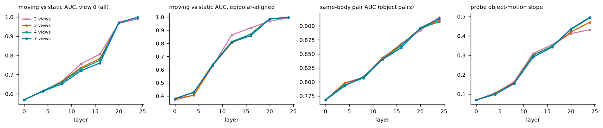
| views | moving vs static AUC, view 0 (all) (first / last layer) | moving vs static AUC, epipolar-aligned (first / last layer) | same-body pair AUC (object pairs) (first / last layer) | probe object-motion slope (first / last layer) |
|---|---|---|---|---|
| 2 | 0.567 / 0.989 | 0.369 / 0.993 | 0.768 / 0.915 | 0.069 / 0.432 |
| 3 | 0.569 / 0.998 | 0.379 / 0.997 | 0.768 / 0.910 | 0.069 / 0.470 |
| 4 | 0.569 / 0.998 | 0.379 / 0.998 | 0.768 / 0.907 | 0.069 / 0.492 |
| 7 | 0.569 / 0.998 | 0.379 / 0.998 | 0.768 / 0.913 | 0.069 / 0.496 |
| views | output separation ratio, frame 0 to 23 (median over scenes) | n scenes |
|---|---|---|
| 2 | 0.741 | 89 |
| 3 | 0.721 | 89 |
| 4 | 0.788 | 89 |
| 7 | 0.726 | 89 |
Item 1 pilot re-render: far-glued pairs kept far apart in the image
Status: done, attempt 1, started 2026-10-15 21:35:58, finished 2026-10-15 21:40:05. Raw results, log.
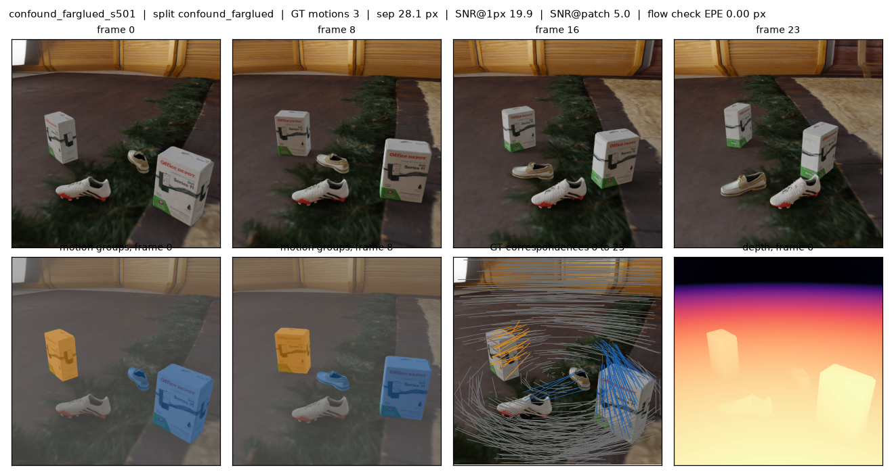
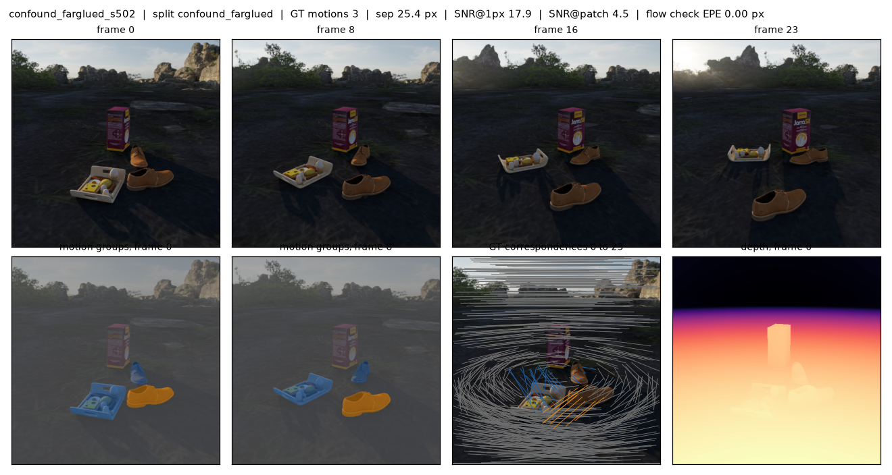
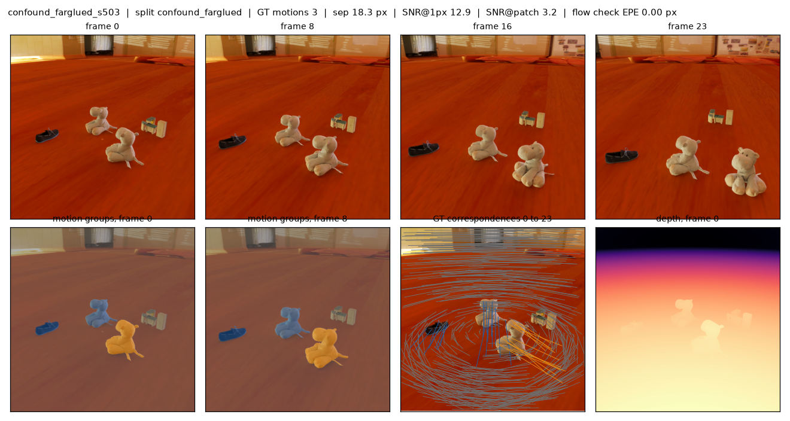
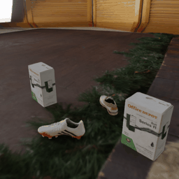
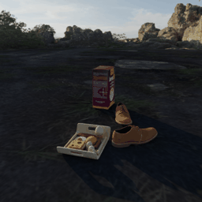
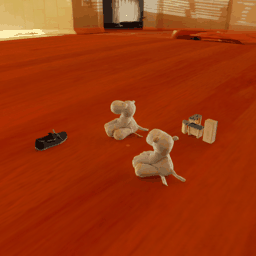
Item 8a: KITTI scene flow 2015 (200 scenes), Any4D slope / EPE / sep_ratio, 2, 4, 7 views, square and wide input
Status: done, attempt 1, started 2026-10-15 21:40:18, finished 2026-10-15 22:01:41. Raw results, log.
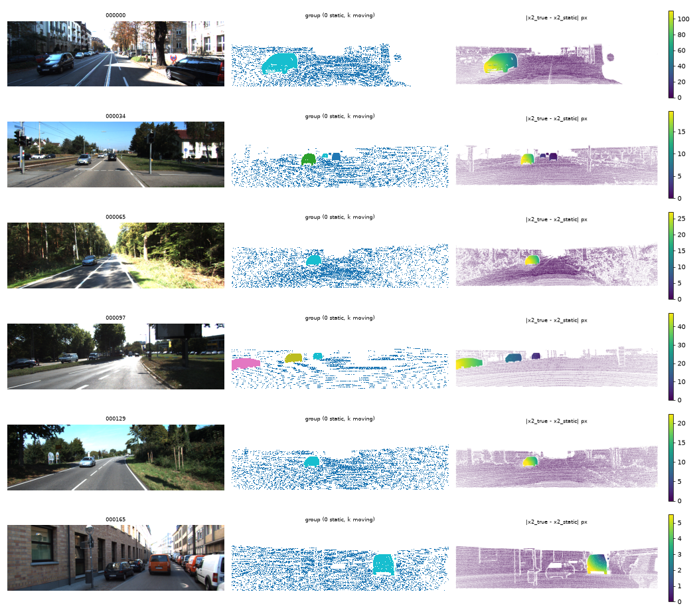
Item 8b: MPI Sintel training (final, clean; every 4th frame), Any4D slope / EPE / sep_ratio, 2 and 4 views, square and wide input
Status: RUNNING, attempt 1, started 2026-10-15 22:01:54. Raw results, log.
Partial results so far; the run is still going.